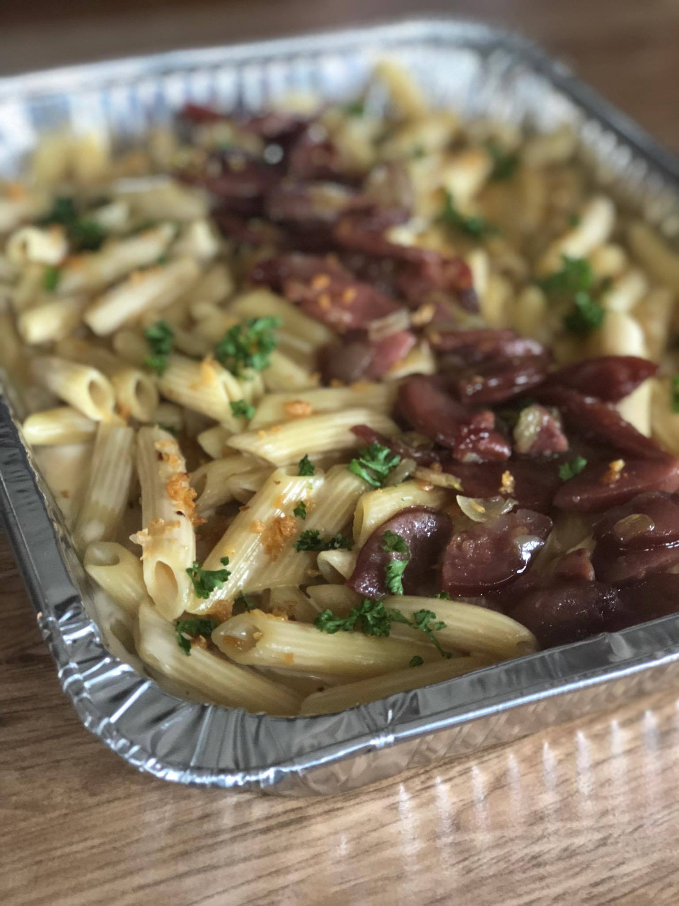

Penne

Penne is a type of pasta with origins in italy. Its name derives from the italian word "Penna,"" which means
"pen" or "quill." The cylindrical shape with angled ends resembles a quill or pen nib, hence the name.
originated in the Campania region of southern Italy, particularly in the areas around Naples.
Ingredients
- 1 lb box Penne
- 2 tablespoons of butter
- Garlic cloves minced
- Tablespoons flour
- 3/4 Chicken Broth or 3/4 Beef Broth
- 3/4 Cup Milk
- 2 teaspoons parsley flakes
- salt and pepper to taste
- 1/3 cup grated parmesan cheese
Directions
- Melt butter and add garlic in a medium sauce pan.
- Cook over medium for 1 minute
- Add flour and cook 1 minute, stirring constantly
- Stir in broth and milk and cook, stirring frequently, until sauce boils and thickens
- Add parsley, salt, pepper and cheese.
- Stir until cheese is melted.
- Toss hot pasta with saue and serve immediately